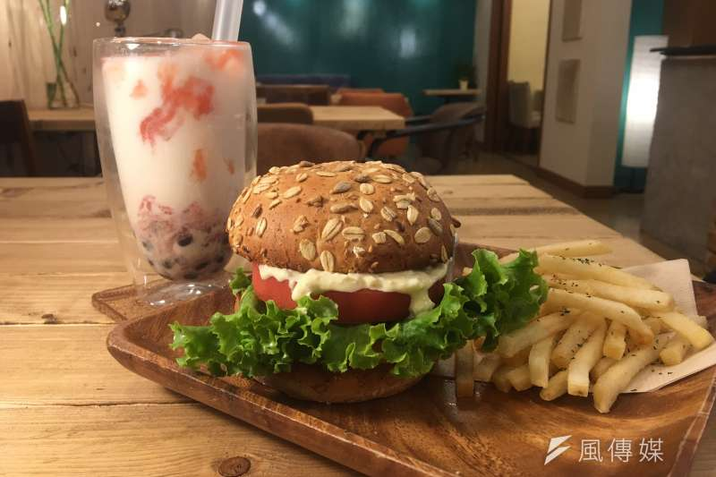

事實上「吃素」與修行的關係並不大，況且修行真正重視的是心境。
撇開信仰不說，近年各國開始紛紛注重起健康飲食與環境保護，
素食已漸漸被越來越多人所接受，加上明年即將到來的2020東京奧運，
為了服務各國吃素的遊客，高品質且平價的素食餐廳勢必將成為一種新趨勢。
令人感到「殘念」的是，以筆者現居的東京池袋地區來說，打開Google地圖搜尋，
你會發現即使在池袋這樣一個繁華的地方，其車站附近的素食餐廳也僅有5家左右而已。
不過在這之中有一家名為TSUMUGU CAFE的複合式咖啡餐廳非常特別，
它不但是素食餐廳，更是一家咖啡店，重點是你還可以在這找到濃濃的「台灣味」。
TSUMUGU CAFE是一家甫開幕不久的複合式咖啡餐廳，
裡面除了賣咖啡、台灣茶、咖哩飯、漢堡等簡餐外，
就連台灣的粽子、麵線等也有賣，更令人驚豔的是這些看似肉類的食品。
